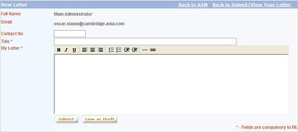

|
Ask Senior Management (ASM)
The Ask Senior Management (ASM) module
provides an interaction channel between MyForum users and the senior
managements.
a. Click on "Ask Senior Management"
link on the top panel of the screen and the ASM Home Page will
be displayed
b. The "ASM" main page is divided
into 3 sections:
* Announcement
*
Latest Letter(s)
* Right menu (Menu, Editor's Note, and Recent Letter(s))
1. Submitting New Letter
a. Click on the "Submit
/ View Your Letter(s)" menu link from the right side menu.
b. The "Submit / View Your Letter(s)"
screen will be displayed. The screen will list down all letters
which have been created by the user previously and the status of
the letter.
c. Click on "New Letter" button
to write new letter.

d. Enter the letter details. Click on "Save
as Draft" to save the letter as draft. User will be able to
edit drafted letter at later time. Click on "Submit" to
submit the letter to administrator to be forwarded to the senior
management in charge of the issue discussed in the letter.
2. Viewing / Editing Your Letter
a. Click on the "Submit / View Your Letter(s)"
menu link from the right side menu.
b. The "Submit / View Your Letter(s)" screen
will be displayed. The screen will list down all letters which have
been created by the user previously and the status of the letter.
User can only edit drafted letters. Letters with other status are
only viewable. Click on the letter title to open the letter.
c. For drafted letters, user will be able to edit the
letter. Make necessary changes and click on "Submit" to
submit the letter.
d. For letters with other status, user will only be
able to view the letter.
|